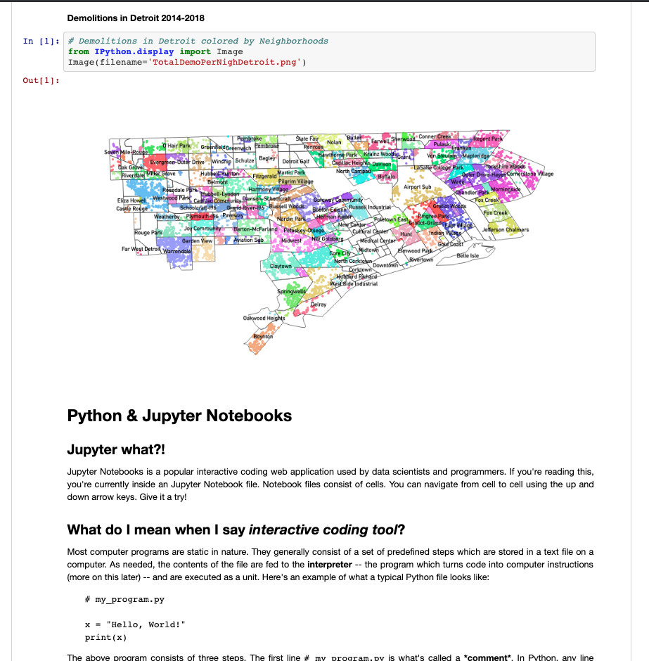
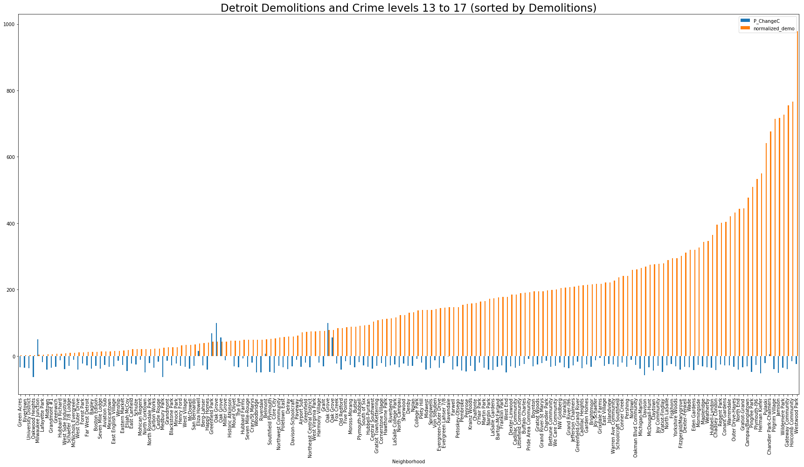
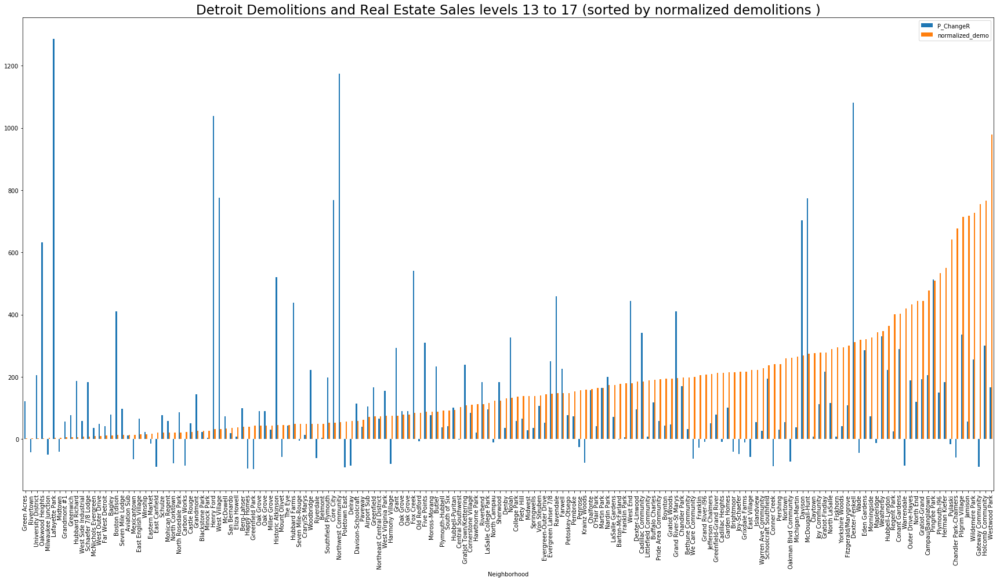

In recent decades, Detroit has greatly suffered from population shrinkage and, consequently, many housing vacancies. This has had a profound impact on the public health and quality of life in the city’s neighborhoods. In 2014, Detroit launched a program to use public funding to demolish vacant houses and has since demolished >14,000 properties. The assumption behind this policy, is that houses surrounding demolition sites are likely to see decreases in crime and increases property value (estimated 4%). At the same time, many Detroiters have raised concerns that the implementation of this plan is being carried out too hastily; without proper consideration for how to identify and safely demolish homes built with hazardous materials and without adequate care for the preservation of Detroit’s distinct character and history. Furthermore, the demolition efforts require substantial public funding, which could be designated for improving homes rather than tearing them down.
In this hands-on workshop I co-led with Eitan Akman , participants from the urban planning and urban design fields had the opportunity to reduce data maps and quantify how demolition policies have impacted Detroit’s public spaces and its perception. Through data visualizations and analysis of important urban variables in Detroit neighborhoods, participants gained an interesting perspective on some of the complex questions surrounding Detroit’s demolition program.
In this workshop, held at the Public X Design conference in Detroit, we gave participants personalized Jupyter Notebooks so they could perform their own data analysis in their web browsers using Python code. The workshop was a walk-through of Python basics as well as an introduction to open data analysis and visualizations. The workshop focused on attempting to understand the impact of the housing demolition policy in Detroit by accounting for demolitions, crime, and real-estate prices in all of Detroit’s neighborhoods.
If you would likg to learn more about our workshop, you can check out the full notebook which is available on Github . Throughout the workshop we learned how to compare different geographical units, such as neighborhoods, by stratifying and working with the percentage changes instead of absolute numbers. Our three main datasets were: demolitions in Detroit from 2014-2018, real estate prices changes between 2013 and 2017, and crime changes between 2013 and 2017.
Conclusions
First we analyzed the neighborhoods where the biggest number of demolitions occurred taking note of the variation in pricing among the different demolition contracts. Later we looked into how the trends in demolitions match real estate and crime trends throughout the period of time when the policy was widely implemented. We found that although crime rates have overall declined from 2013 to 2017, they do not seem to align with the demolition trends among Detroits neighborhoods. As for real estate trends, it seems like there is a negative relationship between demolition and real estate percentage change. Meaning that low (standardized) demolitions in a certain neighborhood may be a predictor of a spike in real estate prices between 2013 to 2017 studies period.
* It is important to note that we didn’t investigate causation between these two variables, and that there may be other reasons for this reversed relationship. For example, areas with low numbers of demolitions may be an indication of higher socio-economic populations, or more central areas, with overall more demand for housing.
Here's us just after the workshop :)